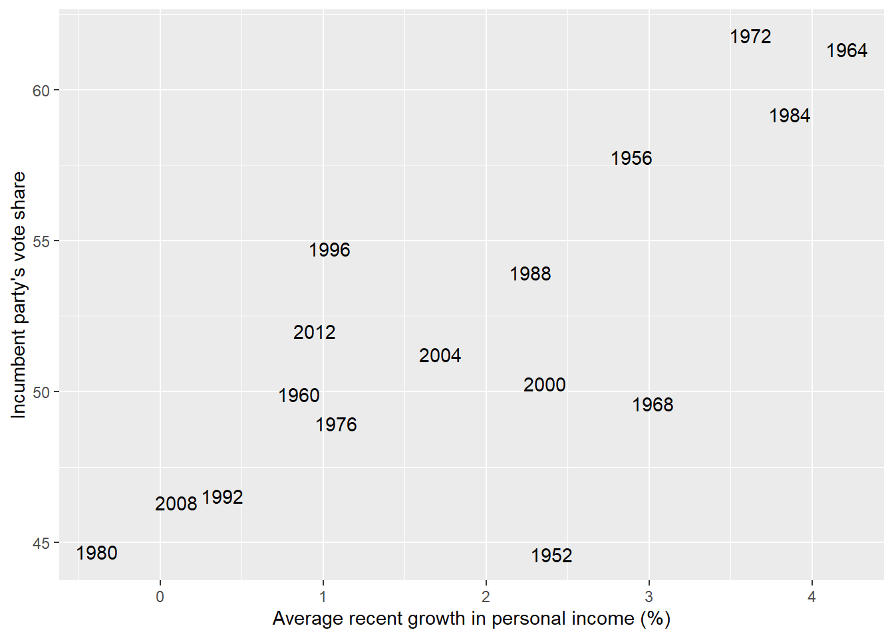
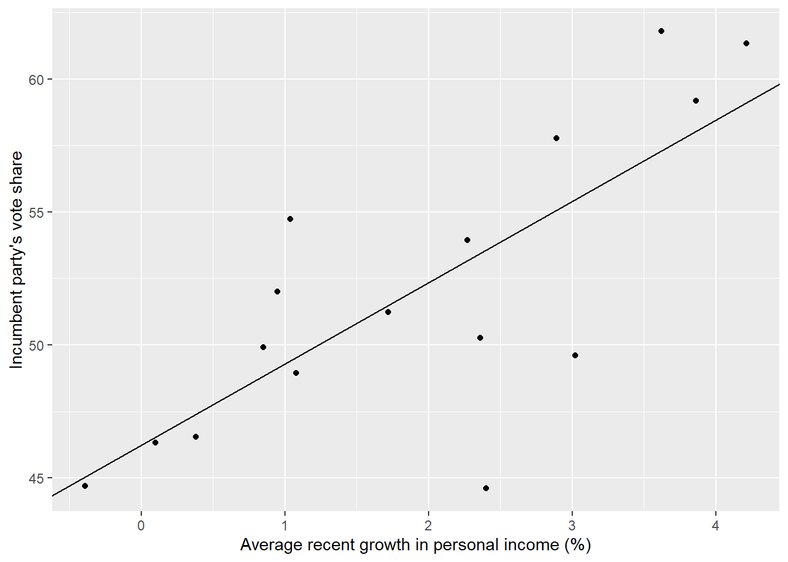

Chapter 1 An Introduction to Stan
Stan Basics
The first model in the book concerns the relationship between incumbent vote share and income growth in U.S. elections.
Here’s a plot of the data:
data(hibbs)
ggplot(data = hibbs, aes(x = growth, y = vote))+
geom_text(aes(label=year))+
xlab("Average recent growth in personal income (%)")+
ylab("Incumbent party's vote share")
Here’s the model in the chapter:
m1_1 <- stan_glm(vote ~ growth, data=hibbs)
# saveRDS(m1_1,file="models\\m1_1.rds")And here’s a plot of the resulting regression line:
ggplot(data = hibbs, aes(x = growth, y = vote))+
geom_point()+
geom_abline(intercept = coef(m1_1)[1], slope = coef(m1_1)[2])+
xlab("Average recent growth in personal income (%)")+
ylab("Incumbent party's vote share")
The stan_glm function comes from the rstanarm package, but I’m trying to learn base Stan so I’ll have a go at recreating it.
Here’s the model code. I also pair down the dataset to only the variables that will be used, which I believe is good practice.
code_m1_1 <-
"data{
int<lower=0> n;
vector[n] vote;
vector[n] growth;
}
parameters{
real a;
real b;
real<lower=0> sigma;
}
model{
vote ~ normal( a + b * growth , sigma );
}"
data_hibbs <- hibbs %>% select(vote,growth)The code has three blocks. In the data block we use \(n\) as a stand in for the number of observations in our data. We then specify that variables vote and growth are vectors of length \(n\).
Our parameters are to be estimated - we have an intercept, a slope, and a noise parameter.
The model block defines our model. In this case it’s just about the simplest possible regression model, with improper priors.
Now we run the model:
m1_1b <- stan_model(model_name = "m1_1b",model_code=code_m1_1)%>%
sampling(data = compose_data(data_hibbs), chains=1)
#saveRDS(m1_1b,file="models\\m1_1b.rds")The first function here, stan_model, compiles the model and the second samples from it. The result is a stanfit object.
Let’s recreate the plot above using point estimates for parameters \(a\) and \(b\):
draws1_1b <- m1_1b %>%
gather_draws(a, b) %>%
mean_qi()
ggplot(data = hibbs, aes(x = growth, y = vote))+
geom_point()+
geom_abline(intercept = draws1_1b$.value[1], slope = draws1_1b$.value[2])+
xlab("Average recent growth in personal income (%)")+
ylab("Incumbent party's vote share")This looks to be about the same line. Any differences might come from slightly different approaches to default priors in the two packages.
Vectorisation in Stan
The code above used a vectorised form of model specification:
vote ~ normal( a + b * growth , sigma );but it’s also possible to specify the unvectorised version of the same model:
for (i in 1:n) {
vote[i] ~ normal(a + b * growth[i], sigma);
}According to the user manual, the vectorised form is faster.
This section of the user manual also describes writing a regression model with more than one predictor using matrix notation. Here’s the example model they use:
data {
int<lower=0> N; // number of data items
int<lower=0> K; // number of predictors
matrix[N, K] x; // predictor matrix
vector[N] y; // outcome vector
}
parameters {
real alpha; // intercept
vector[K] beta; // coefficients for predictors
real<lower=0> sigma; // error scale
}
model {
y ~ normal(x * beta + alpha, sigma); // likelihood
}The matrix of predictors \(x\) multiplies the vector of coefficients \(\beta\). Consider trying this way of coding models once you get to multiple regression in the book.
That’s more or less the only model in the first chapter of Regression and Other Stories. so I’ll leave my notes there.